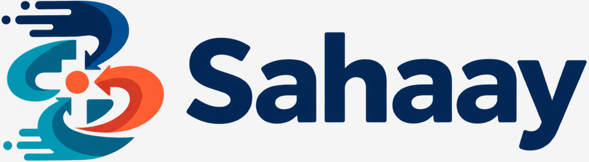
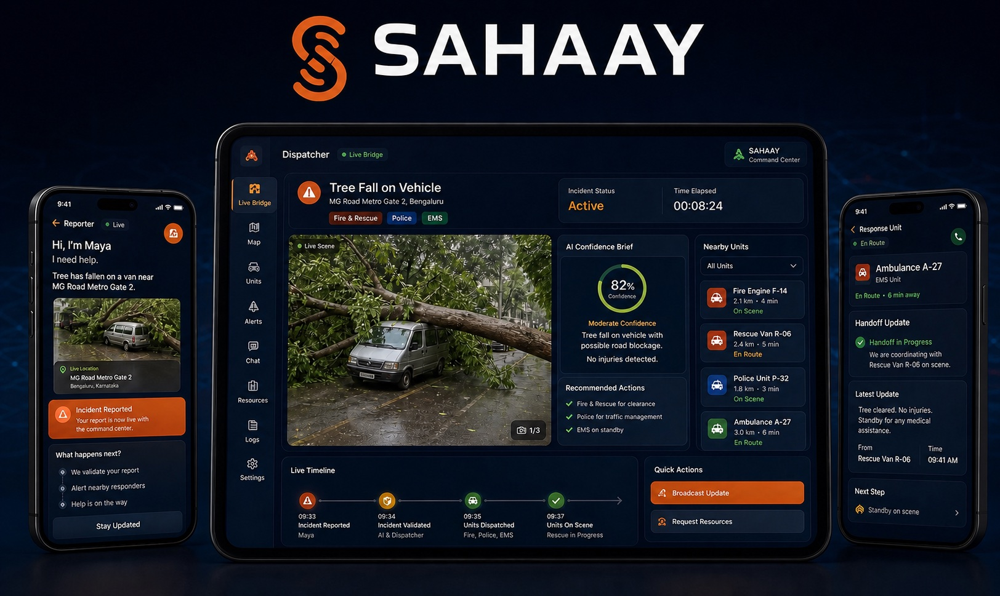

Critical details arrive too late.
A person in distress or a witness may only have seconds. “A vehicle is stuck” is not enough for dispatchers to know whether to send fire/rescue, police, EMS or all three.

Start evaluator simulation ↗Independent emergency response concept
We are building a faster way to turn the first few seconds of an incident into a shared rescue picture. The evaluator simulation follows Maya reporting a van trapped under a fallen tree, then shows Arjun coordinating fire/rescue, police and EMS to a no-injury closure.
What it is: an independent adaptation of the existing call-first emergency experience—a hybrid digital layer that works with calls, SMS, dispatchers and field teams.

Hybrid emergency-response app Reporter → dispatcher → fire / police / EMS handoffThe quick console and role accounts are supporting views. The simulation is the canonical walkthrough: Maya reports, Arjun triages, Code Blue is checked, fire/rescue + police + EMS are coordinated, and the incident closes with no injuries.
This is a better, context-rich version of the current call-first workflow—not a replacement for emergency authorities and not a generic safety app.
Sahaay adds structured reporting and shared context to the channels people already rely on: phone calls, SMS, human dispatch and professional field response.
A person in distress or a witness may only have seconds. “A vehicle is stuck” is not enough for dispatchers to know whether to send fire/rescue, police, EMS or all three.
Sahaay collects location and tower context, opens a safe live bridge, lets the dispatcher capture spoken details, and turns the report into a confidence-scored incident brief.
In the simulation, “all doors jammed under a fallen tree” becomes fire/rescue for access, police for road safety, EMS for assessment and a documented no-injury closure.
Problem: the reporter may be the person in distress, or a witness at the scene who does not know what details matter. Dispatchers and response units lose time assembling fragments across a call, a map and a dispatch log.
One-tap report for self or witness mode, followed immediately by a dispatcher bridge.
Turn location, tower context, safe camera view and dispatcher notes into a confidence-scored incident brief.
Keep reporter, dispatcher, fire/rescue, police and EMS aligned until the final status is recorded.
Written from the reporter’s perspective—whether I am reporting for myself or for someone else at the scene.
I choose the closest situation and describe only what I can observe—without needing emergency vocabulary.
My location, a landmark, access point and optional media become a precise report—not just a dropped pin.
Simple prompts help me answer critical questions: people involved, visible hazards and immediate safety.
I receive safe status updates and can add changes until the professional response unit takes over.
Every feature is designed to reduce uncertainty without pretending a machine can replace human judgment.
Start a report for yourself or someone else, attach location and tower context, then move into dispatcher guidance.
↗Arjun asks for a safe camera angle, gives do/don’t guidance and records what is known versus what needs confirmation.
↗Tree access sends fire/rescue, traffic risk sends police, injury uncertainty sends EMS and backup readiness.
↗The responder closes the incident with a status comment, so the timeline records no injuries, no transport and lane reopening.
↗Demo scenario: Maya reports a large van trapped under a fallen tree near Koramangala signal. All doors are jammed, passengers are responsive but injury status is unknown, so Arjun coordinates fire/rescue, police and EMS before closing with no injuries found. No live emergency systems or personal data are connected.
Run the simulation to see how Sahaay assembles context for a reporter and response unit.
 No incident location yet
No incident location yetPrototype honesty
Responsive landing page, quick console run, individual role views and a synchronized three-screen tree-rescue simulation with pause, step, restart, audio captions, unit assignment and no-injury closure.
Device sensor permissions, telephony/SMS fallback, real dispatch integration, identity, hospital capacity, offline sync, operational security, Piper runtime packaging and field testing.
Backend / process / governance
The prototype does not auto-dispatch, call real units or connect to live 108/112 infrastructure. At scale, Sahaay should sit between first reporters, dispatchers and official response systems with consent, audit trails and clear fallback paths.
Sensor context, camera cues and model summaries can recommend urgency and unit mix, but every dispatch, Code Blue escalation and closure remains confirmed by a trained human operator.
Reporter location, photos, audio and video should show explicit consent where possible, use encryption, restrict access by role and follow short retention windows unless legally required.
The backend should store immutable incident events: report created, dispatcher verified, units assigned, status changed, responder notes added and final handoff closed.
Sahaay should integrate through approved adapters with emergency call centers and field systems. If data is weak, network drops or consent is unavailable, the fallback is still voice/SMS and human verification.
A better starting point